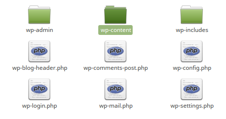
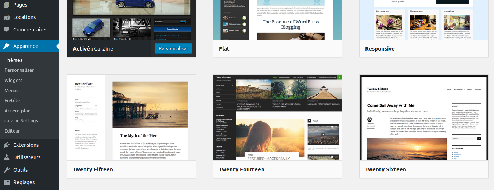

Installer un thème sur WP :
Par défaut Wordpress intègre quelques thèmes préinstallés. Ne nous voilons pas la face
ces thèmes sont loin d'être les plus attirants en terme d'esthétique et ils ne répondent pas forcément à vos besoins
ni à ceux de votre client.
Donc nous allons avoir besoin d'installer de nouveux thèmes sur notre WP. Pour ce faire il existe plusieurs sites qui
proposent des thèmes à télécharger et à installer. Pour cet exemple je vais utiliser le site wordpress.org.
Une fois notre thème soigneusement choisis, nous allons le télécharger en ZIP.
Avant d'extraire le contenu du zip, il faut nous connecter à notre serveur, j'utiliserai le SSH pour cela :
Lorsque nous seront connecté à notre serveur, nous pourrons alors ouvrir l'archive téléchargée et l'extraire vers le dossier souhaité (le dossier se nomme thème, et il est dans wp-content)
Rendez-vous maintenant dans notre wordpress, rubrique thème. Le nouveau apparait, cliquez sur installer puis sur activer. Le thème peut nécessiter des pluggins supplémentaires. Il vous suffira de répéter l'opération mais pour un pluggin, donc nous extrairons l'archive vers le dossier pluggins de notre serveur WP.
